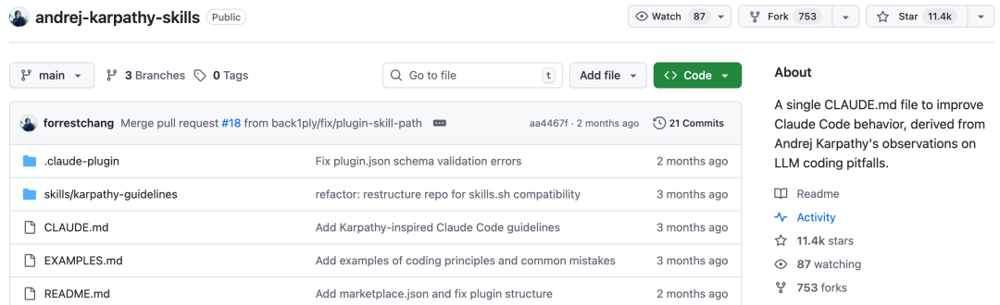

相信大家用 AI 写代码时都遇到过以下类似的问题：
• 让 AI 写个简单功能，它给你整出一堆花里胡哨的抽象； • 明明只需要改一行代码，结果把整个文件的注释和格式都改了； • 遇到需求不明确的地方，它不提问，直接自己瞎猜，最后做出来根本不是你要的； • 代码写完看起来没问题，一运行就发现各种过度设计带来的问题。
这些问题，其实 AI 大神 Andrej Karpathy 早就看在眼里了。
他之前在社交媒体上分享过对 LLM 编程陷阱的观察，每一条都精准踩中了大家的痛点。
最近逛 GitHub 时发现有位开发者把 Karpathy 的这些经验总结做成了一个 Claude Code 插件，直接把这些原则变成 AI 必须遵守的行为准则。
这个项目就是 andrej-karpathy-skills，GitHub 地址：
https://github.com/forrestchang/andrej-karpathy-skills

它到底解决了什么问题
在介绍这个插件之前，我们先看看 Karpathy 总结的 LLM 编程三大痛点：
第一，盲目假设，不懂得提问
模型会自作主张地做出错误假设，然后一路走到黑。它们不管理自己的困惑，不寻求澄清，不指出矛盾，不展示权衡，在应该提出反对意见时也不会这样做。
第二，过度设计，代码臃肿
它们真的很喜欢把代码和 API 复杂化，过度使用抽象，不清理无用代码……用 1000 行代码实现一个 100 行就能搞定的功能。
第三，副作用太大，乱改代码
它们有时仍然会作为副作用更改/删除它们不太理解的注释和代码，即使这些与任务无关。
这三个问题，相信每一个用过 AI 写代码的人都深有体会。而 andrej-karpathy-skills 就是针对这三个问题，提炼出了四大编程原则。
四大核心原则
这个插件本质上是一个专门优化 Claude Code 行为的系统指南，它通过一个 CLAUDE.md 文件，给 AI 设定了四条必须遵守的铁律：
1、思考先行（Think Before Coding）
不假设。不隐藏困惑。展示权衡。
这一条针对的就是 AI 盲目猜测的问题。它强制 AI：
• 明确陈述假设——如果不确定，就提问而不是猜测 • 展示多种解释——当存在歧义时，不要默默选择一个 • 在必要时提出反对意见——如果存在更简单的方法，就说出来 • 困惑时停止——指出不清楚的地方并要求澄清
2、简洁至上（Simplicity First）
用最少的代码解决问题。不做任何投机的事情。
这一条专门治过度设计的毛病：
• 不添加超出要求的功能 • 不为单次使用的代码做抽象 • 不添加未被要求的"灵活性"或"可配置性" • 不为不可能出现的场景做错误处理 • 如果 200 行可以简化为 50 行，那就重写
3、精准改动（Surgical Changes）
只碰必须碰的。只清理你自己制造的混乱。
这一条约束 AI 的修改范围：
• 不要"改进"相邻的代码、注释或格式 • 不要重构没有坏掉的东西 • 匹配现有的风格，即使你会用不同的方式 • 如果你注意到不相关的死代码，提及它——但不要删除它
当你的改动产生了孤儿代码时：
• 删除你的改动导致不再使用的导入/变量/函数 • 除非被要求，否则不要删除预先存在的死代码
测试标准：每一行改动都应该直接追溯到用户的需求。
4、目标驱动（Goal-Driven Execution）
定义成功标准。循环直到验证通过。
这一条把命令式任务转化为可验证的目标：
与其说……不如转化为……
"添加验证" → "为无效输入编写测试，然后让它们通过"
"修复这个 bug" → "编写一个能复现它的测试，然后让它通过"
"重构 X" → "确保测试在重构前后都通过"
对于多步骤任务，陈述一个简要计划：
1. [步骤] → 验证：[检查] 2. [步骤] → 验证：[检查] 3. [步骤] → 验证：[检查]
正如 Karpathy 所说："LLMs 异常擅长循环直到它们满足特定目标……不要告诉它做什么，给它成功标准，然后看着它去做。"
如何使用这个插件
这个插件有两种使用方式，都非常简单：
方式一：Claude Code 插件（推荐）
在 Claude Code 中，首先添加插件市场：
/plugin marketplace add forrestchang/andrej-karpathy-skills然后安装插件：
/plugin install andrej-karpathy-skills@karpathy-skills这样就把指南安装为 Claude Code 插件，使其在你的所有项目中都可用。
方式二：CLAUDE.md（按项目）
对于新项目：
curl -o CLAUDE.md https://raw.githubusercontent.com/forrestchang/andrej-karpathy-skills/main/CLAUDE.md对于现有项目（追加）：
echo "" >> CLAUDE.md
curl https://raw.githubusercontent.com/forrestchang/andrej-karpathy-skills/main/CLAUDE.md >> CLAUDE.md如何知道它在起作用
这些指南在起作用的标志是：
• diff 中更少的不必要改动——只出现被要求的改动 • 更少因过度复杂导致的重写——代码第一次就很简单 • 实现前先提出澄清问题——而不是在犯错之后 • 干净、最小化的 PR——没有顺便的重构或"改进"
自定义指南
这些指南设计为可以与项目特定的说明合并。你可以将它们添加到现有的 CLAUDE.md 或创建新的。
对于项目特定规则，添加这样的部分：
## 项目特定指南
- 使用 TypeScript 严格模式
- 所有 API 端点必须有测试
- 遵循 `src/utils/errors.ts` 中现有的错误处理模式写在最后
andrej-karpathy-skills 这个插件，把 Andrej Karpathy 对 LLM 编程陷阱的深刻观察，转化为 AI 可以直接遵循的四条原则。
它强制 AI 在动手前先理清思路，遇到不确定的地方主动提问，用最少的代码解决问题，只精准改动目标代码。
如果你经常用大模型写代码，这个插件绝对值得引入你的工作流。它能有效减少 AI 瞎改代码带来的返工成本，让 AI 真正成为你的得力助手。
GitHub：https://github.com/forrestchang/andrej-karpathy-skills

如果本文对您有帮助，也请帮忙点个 赞👍 + 在看 哈！❤️